Map editor: building tools
Vertices, edges and faces, the clipper, CSG, brush shapes, transformations, patches, texturing, regions, filters, layers and models - the tools of NetRadiant-Custom with its keys, menus and dialogs.
Vertices, edges and faces#
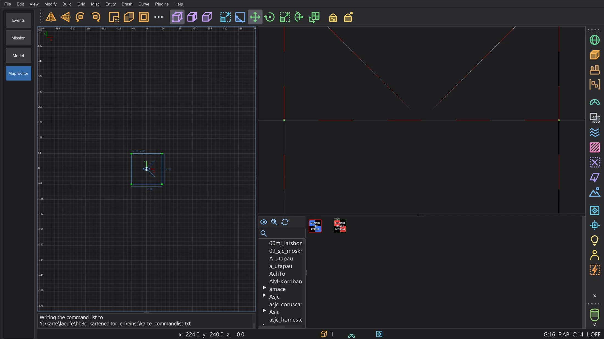
Select a brush or patch and press V (vertices), E (edges) or F (faces). Click a point to select it, drag it to reshape the brush; the brush is rebuilt from its points as in NetRadiant-Custom. The same key again returns to normal selection. B is the build tool (extrude, build chains, clone), G the UV tool for the texture of a face. Texture Lock (Shift+T) keeps textures in place while you move brushes.
Clipper#
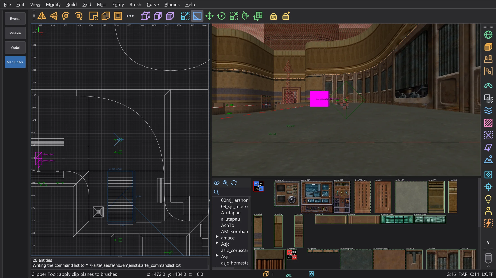
Select brushes and press X. Click up to three points in a 2D view, or on surfaces in the camera, to define the cutting plane; drag the points to correct them. Enter cuts and keeps one side, Shift+Enter splits into both halves, Ctrl+Enter flips which side is kept. A double click cuts or splits, as set on the preference page Clipper.
CSG#
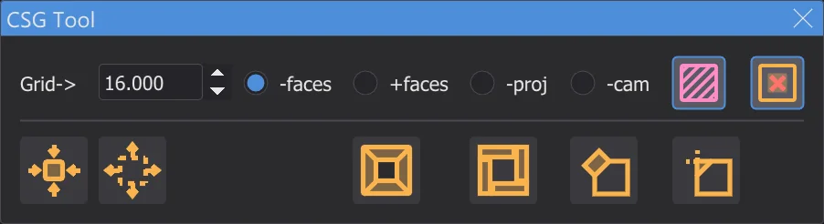
Brush > CSG: CSG Subtract (Shift+U) cuts the selected brushes out of everything they touch, CSG Merge joins brushes into one convex brush, CSG Wrap Merge (Ctrl+U) wraps them in one, CSG Intersect (Ctrl+Shift+U) keeps only the common part, Make Room turns a brush into a hollow room. Make detail (Alt+D) and Make structural (Alt+S) set the detail flag.
Brush shapes and transformations#
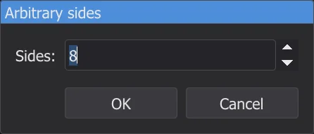
Brush turns the selected brush into a Prism, Cone, Sphere, Rock or Icosahedron; a small dialog asks for the number of sides. Ctrl+3 ... 9 make a prism with that many sides around the axis of the active 2D view. Modify rotates and mirrors the selection around its centre, Arbitrary rotation (Shift+R) and Arbitrary scale (Ctrl+Shift+S) take exact values. Repeat Transforms (Ctrl+R) repeats the last move, rotation or scale, Reset Transforms (Alt+R) forgets it.
Patches#
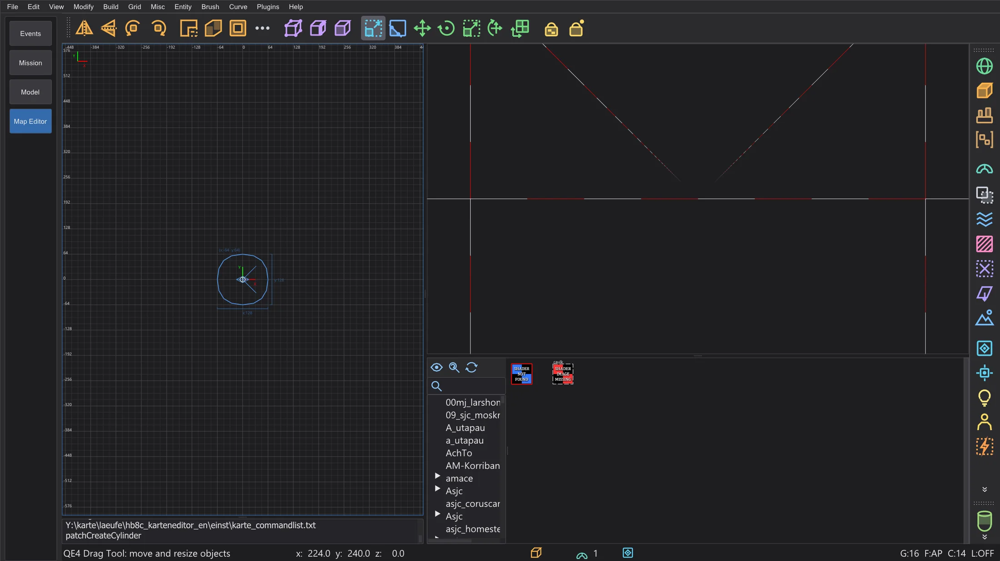
The Curve menu builds patches in the bounds of the selection: plane (Simple Patch Mesh, Shift+P), bevel, end cap, cylinders, cone, sphere and the exact versions with a size dialog. Insert/Delete adds or removes rows and columns, Matrix inverts (Ctrl+I), transposes (Ctrl+Shift+M), redisperses and smooths. Cap Selection (Shift+C) closes the ends, Thicken (Ctrl+T) gives a patch a thickness, Deform adds noise. The texture of a patch: Naturalize (Ctrl+N), invert X and Y, reset.
Texturing#
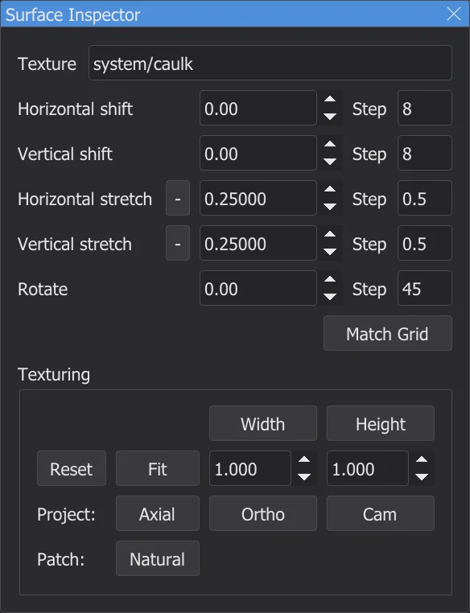
The Surface Inspector (S) shows the texture of the selected faces: shift, scale and rotation, the step sizes for the arrow keys, fit (Ctrl+F) and the projection (axial, ortho, from the camera). Without the window, Shift + arrow keys shift the texture, Ctrl + arrow keys scale it, Shift+PgUp / PgDn rotate it. Select Textured (Ctrl+Shift+A) selects all faces with the current texture. With Tags GUI the texture browser gets tags for sorting textures.
Selection, regions and files#
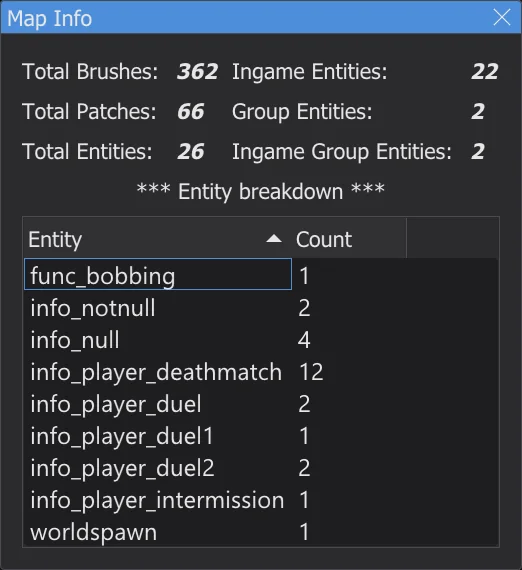
Select inside and Select touching select what lies inside or touches the selected brush. View > Region shows only part of the map: Set XY (the visible area of the 2D view), Set Brush, Set Selection (Ctrl+Shift+R), Off. File > Save region writes the region with walls around it and a player start, Save selected only the selection, Import adds another map. Find brush selects a brush by its entity and brush number. The map is saved automatically every 15 minutes (preference page Autosave).
Filters#
View > Filter and the filter bar on the right hide kinds of objects: world brushes (Alt+1), entities, caulk, clips, liquids, detail brushes, patches, lights, models, triggers and more. Some buttons do something else on a right click, as their tooltip says: make the selection detail or structural, create a func_group, put caulk or a tool texture on it. Invert filters and Reset filters turn all of them around or off.
Layers#
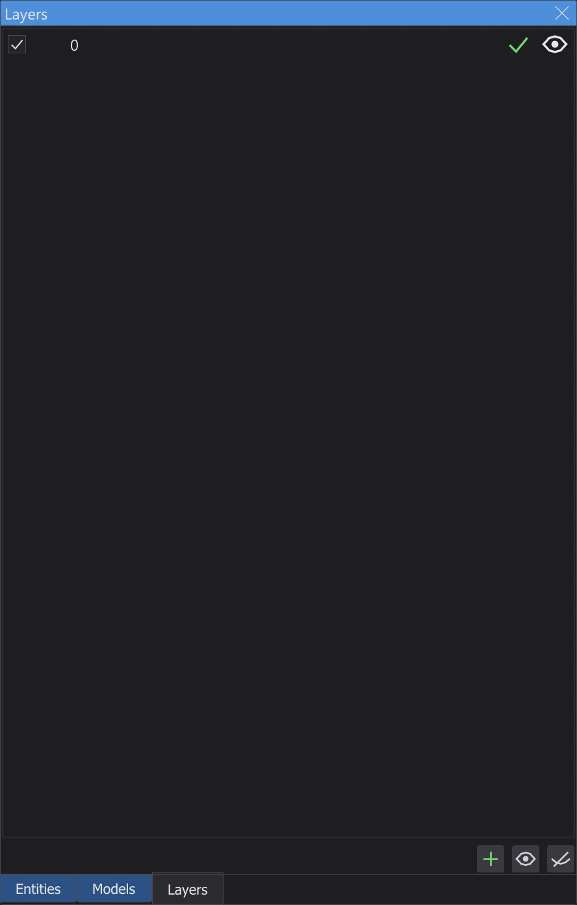
Layers group parts of the map. In the Layers Browser (L) you create and rename layers, nest them by dragging, hide or show them with the eye, and move the selection into a layer (Shift+Q); Ctrl+Q extends the selection to its layers. New objects go into the current layer. The layers are saved in the .map file as in NetRadiant-Custom.
Models#
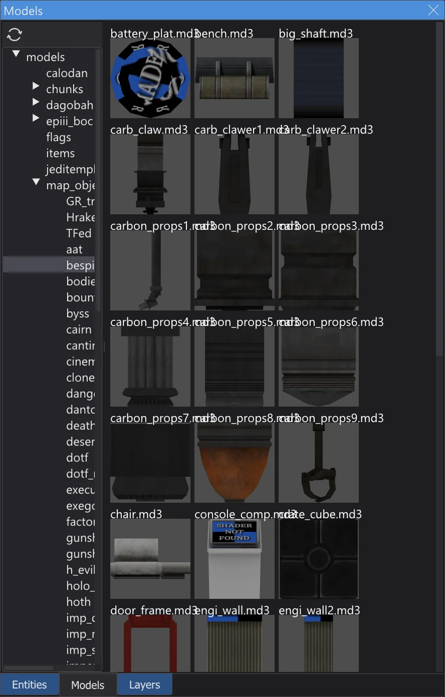
Entities like misc_model show their model (.md3, .glm, .ase) in both views, with skin, modelscale and angles. In the Model Browser (/) a double click on a folder loads its models; a click on a model gives it to the selected entities, a double click inserts a new misc_model in front of the camera. Refresh models reloads the models after they changed.
Preferences#
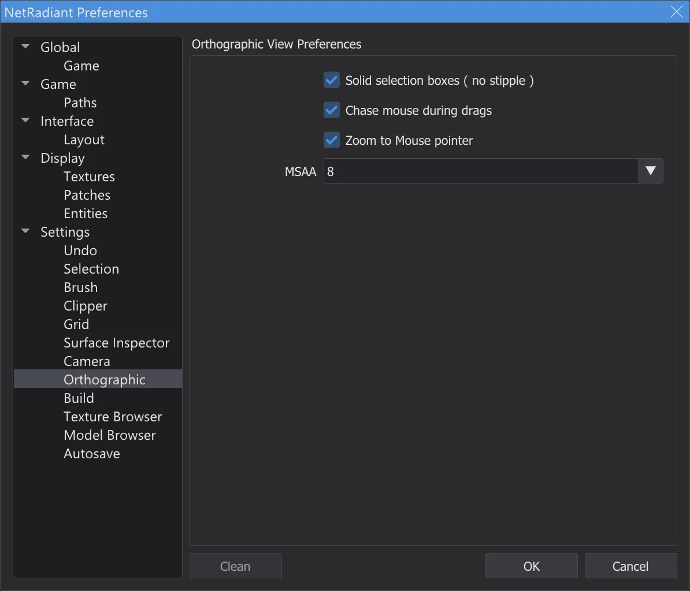
All pages of NetRadiant-Custom's preferences work: Brush (default texture scale, brush type of new maps, always caulk), Grid, Undo, Orthographic (solid or stippled selection, follow the mouse at the edge while dragging, zoom to the mouse pointer), Build, Settings (nudge after duplicating, load the last map). Under Game you choose Jedi Academy or Jedi Outcast, a mod and the mapping mode (single or multiplayer entities), under Paths the game folder and up to five extra folders. Choosing another game asks to restart the map editor, as NetRadiant-Custom does.
Menus and windows#
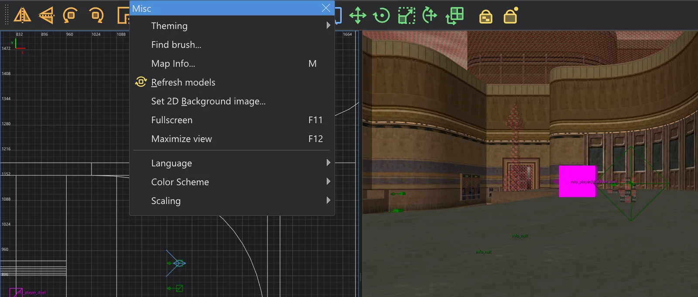
A click on the dashed line at the top of a menu tears it off into a window that stays open (Detachable Menus on the page Layout). Misc > Fullscreen (F11) fills the screen, Maximize view (F12) enlarges the view under the mouse. OpenGL Font chooses the font of the 2D and camera views, Set 2D Background image puts an image file into the bounds of the selection in the active 2D view, for tracing. Items that are still greyed out - the plugins other than prtview - belong to a later stage; compiling with q3map2 is described on Map editor: compiling the map.